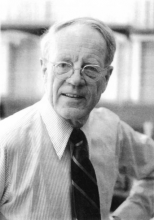

Please note: the AAS Obituaries are temporarily being hosted on this website while their full content is being ingested into the PubPub publishing platform newly adopted by the Bulletin of the American Astronomical Society. When the migration is complete, your existing links will take you to the final, migrated content. Contact peter.williams@aas.org with any questions.
Leverett Davis, Jr. (1914-2003)
Professor Leverett Davis Jr., Professor of theoretical physics at the California Institute of Technology, died on June 15, 2003 after a long illness. He was 89 years old. He contributed many important ideas and concepts to theoretical astrophysics and was a pioneer in the in situ scientific exploration of space using observations from spacecraft.
Davis was born in Elgin, Illinois on March 3, 1914, the eldest of four children of Louis Leverett Davis and Susan Gulick Davis. His parents moved several times as he grew up because his father, a mining engineer, became involved in different mining operations in the American West. Leverett married Victoria Stocker in June 1943. They had two children who died in childhood and subsequently adopted a son, Jeffrey. His wife and son survive him.
Davis's early education was rather fractured and uneven because of the many family moves, with periods of home schooling alternating with regular school. His high school education was, on the other hand, reasonably normal. It was while in high school that he decided that he wanted to do physics or mathematics. He went on to earn his Bachelor of Science degree at Oregon State College in 1936, after which he started graduate studies at the California Institute of Technology, to pursue a graduate degree in physics. His advisor was William V. Houston and Davis received his PhD in 1941 for a thesis on electrical properties in nerves. He briefly entertained the idea of changing to work in biophysics.
During World War II, Davis became an integral member of the Caltech project for rockets, which developed a number of different types of rockets used in the war. As a result of this war work, Davis wrote a book on Exterior Ballistics, published by Van Nostrand in 1958.
He joined the faculty at the California Institute of Technology in 1946, after several years on campus as an instructor. In all, he taught there for nearly four decades before retiring as Professor of Theoretical Physics in 1981. For Davis, teaching was a serious endeavor that involved conscientious preparation of class lectures the night before presenting them. He particularly delighted in problems in mechanics, in contrast to his own area of research, and was known among students for his problems involving "multiple monkeys and multiple pulleys."
His research interests spanned a wide range of areas in astrophysics, but focused mostly on the physics of magnetic fields and charged particles in astrophysical objects, including in situ observations from spacecraft.
Magnetic Fields and Plasmas: Some of Davis's most important papers came out of a collaboration with Jesse Greenstein in the early 1950's and concerned the interpretation of the observed polarization of starlight as due to the partial alignment of interstellar dust grains, as a result of their interaction with the interstellar magnetic field. This became the standard interpretation of the polarization and only recently have improved models appeared. This early foray into magnetic fields led to a lifelong interest in astrophysical and, later, heliospheric magnetic fields and their interactions. He wrote significant papers on the acceleration and diffusion of cosmic rays resulting from their interaction with the complicated electromagnetic fields in space. Collaborations with L. Biermann and R. Luest in Germany led to further significant papers, in particular one that reported on the discovery of an important new kind of non-linear wave in collisionless plasmas by Davis, Luest and A. Schlueter.
Space Physics: In 1955, well before the continuous solar wind was predicted or established, Davis was sole author of a remarkably prescient paper in which he suggested that particles flow out, more or less continuously, from the Sun, to inflate a spheroidal cavity in the interstellar medium, approximately 200 AU in radius. The existence of this cavity (now called the heliosphere), carved out by the solar wind, is now well established. The radius of the heliosphere is not yet known for certain, but is certainly greater than some 90 AU (the current distance to the Voyager 1 spacecraft), and probably of the order of, or perhaps greater than, 100 AU. Observational and theoretical investigations of the boundary of this cavity are currently a very active area of research.
In the 1960's, Davis's interests in astrophysical and solar magnetic fields, energetic particles and plasmas led naturally to investigations in the new field of space physics, where observations from spacecraft were revolutionizing our understanding. He wrote important papers unraveling the basic physical processes governing the motions of trapped particles in the radiation belts of planets such as the Earth and Jupiter. This work led naturally to his deep involvement in the early space program, where detailed in situ observations of these phenomena became possible. He became a consultant to one of the early companies developing spacecraft, and this led to a number of pioneering contributions to our understanding of interplanetary space.
Davis was one of the true pioneers in the exploration of the plasmas and their associated magnetic fields in space using in situ observations from spacecraft, which began in the late 1950's. He participated effectively as a co-investigator in several of the early planetary missions to Venus in 1962 (Mariner 2), to Mars in 1964 (Mariner4), to Jupiter in 1973-74 (Pioneer10, 11) and to Saturn in 1989 (Pioneer11). The Pioneer spacecraft returned data for nearly 30 years, until the last signal was received from Pioneer 10 in 2002. He continued working on spacecraft data until the early 1980's when he retired.
In both his personal and professional life, Davis was a man of very high standards and great personal integrity. He was a devoted family man who enjoyed nothing more than a road trip including camping, with his family. He was serious about his work and responsibilities, but also had a subtly infectious sense of humor.
Obituary written by: Jack Randolph Jokipii (University of Arizona)
BAAS Citation: BAAS, 2004, 36, 1666
SAO/NASA ADS Bibcode: 2004BAAS...36.1667J